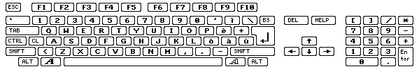

Kody klawiszy (rawkey)
Wszystkie klawisze u¿ywane przez WHDLoad musz± byæ okre¶lone jako kody rawkey.
Dlatego te¿ tutaj znajduje siê tabela pokazuj±ca wszystkie kody rawkey w
postaci szesnastkowej:

dla porównania poni¿ej znajduje siê rozk³ad klawiszy na klawiaturze amerykañskiej:
 ,
,
tutaj francuskiej:
 ,
,
a tutaj niemieckiej:
 .
.
a tutaj w³oskiej:
.
Kody przycisków
Od wersji 16.8 jest tak¿e mo¿liwe wyj¶cie z WHDLoad przy u¿yciu przycisków
myszki, d¿ojstika lub d¿ojpada. Do tego celu s³u¿± specjalne kody przycisków
zestawione w tabeli poni¿ej Kody te dzia³aj± jedynie z opcj± QuitKey, nie zadzia³aj± jednak z ¿adn± inn± opcj±
klawiszy.
Aby umo¿liwiæ pakietowi detekcjê wci¶niêcia przycisku, opcja NoVBRMove nie mo¿e byæ u¿yta, zainstalowany
procesor musi byæ co najmniej MC 68010, a zainstalowany program musi mieæ
w³±czon± obs³ugê przerwañ wygaszania pionowego.
Kody przycisków s± podane w notacji dziesiêtnej i szesnastkowej.
U¿ywanie przycisków d¿ojpada ($103..$10a/$113..$11a) jako parametr QuitKey spowoduje to, ¿e zainstalowany program nie
bêdzie móg³ wykryæ/sprawdziæ/u¿yæ d¿ojpada. Zainstalowany program bêdzie uwa¿a³,
¿e jest pod³±czony d¿ojstik. WYnika to z pewnych ograniczeñ sprzêtowych, a
dok³adniej stan d¿ojpada mo¿e byæ sprawdzany tylko raz na 1/50 sekundy. Wiêc nie
u¿ywaj tej opcji do gier wymagaj±cych d¿ojpada.
Klawisz wyj¶cia QuitKey wywo³ywany poprzez jednoczesne
wci¶niêcie przycisków Wstecz, W przód i Odtwarzaj jest obs³ugiwany zaczynaj±c od WHDLoad
w wersji 18.4.
kody portu 0
zazwyczaj mysz |
kody portu 1
zazwyczaj d¿ojstik/d¿ojpad |
mysz |
d¿ojstik |
d¿ojpad |
Megadrive |
Master System
TecnoPlus |
| $100/256 |
$110/272 |
lewy przycisk |
fire |
Czerwony/Select |
B |
A |
| $101/257 |
$111/273 |
prawy przycisk |
drugi fire |
Niebieski/Stop |
C |
B |
| $102/258 |
$112/274 |
¶rodkowy przycisk |
| $103/259 |
$113/275 |
|
|
Play |
| $104/260 |
$114/276 |
|
|
Reverse/Left Ear |
| $105/261 |
$115/277 |
|
|
Forward/Right Ear |
| $106/262 |
$116/278 |
|
|
Zielony/Shuffle |
| $107/263 |
$117/279 |
|
|
¯ó³ty/Loop |
| $108/264 |
$118/280 |
|
|
Czerwony/Select |
| $109/265 |
$119/281 |
|
|
Niebieski/Stop |
| $10a/266 |
$11a/282 |
|
|
Odtwarzaj+Wstecz+W przód |
W wersjach 16.4 - 16.7 istnia³a mo¿liwo¶æ u¿ycia jako klawisza wyj¶cia kodu
$73, aby opu¶ciæ program naciskaj±c lewy przycisk myszki. Nie bêdzie to dzia³a³o
w wersji 16.8 i pó¼niejszych. Nale¿y teraz u¿ywaæ do tego celu nowego kodu
przycisku - $100.